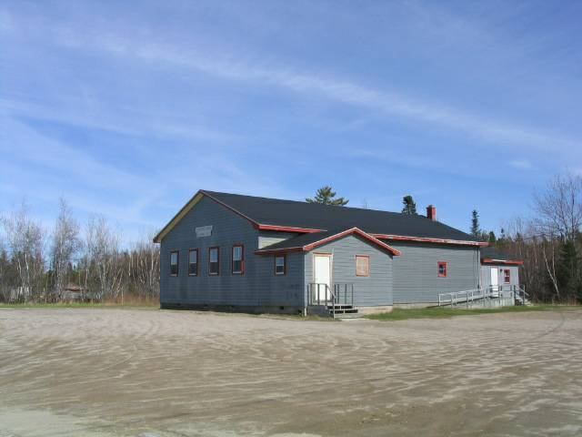

Wanted A
photo of the first and second Black River Community Halls
Like most communities of the day, the church and the local school served as centers for community gatherings. My sister, Lillian, recalled many dances in the Little Branch School at which my father volunteered to sell candy and pop, take tickets, and help with setting up and cleaning up afterwards. Many others in the community, I know, could say the same about their parents and neighbours at their local school.
This changed in 1931 with the opening of the Black River Community Hall on the same site as the current building. Most of the information that follows was gleaned and interpreted from The Book of Accounts for the Black River Community Hall for the period 1930 to 1973, newspaper references, personal knowledge and discussion with family and friends.
Discussion about a community hall, I am sure, consumed considerable time in the community in the late 1920’s and, if minutes of the local Agricultural Society #103 ere available, as are later minutes, references to such discussions could be found..
The first record of construction of the Black River Community Hall is for the trucking of gravel on October 20, 1930. On that date, the first loads of gravel and sand were taken to the site by George Cameron, A. W. MacDougall, Harold Godfrey and Robert Harper. Wallace MacDonald worked that day but did not haul gravel. Forms were built on October 21 and 22 and on October 23 and 24 concrete was poured. A dream began to take shape.
Framing commenced of the two-story structure on October 29. A later newspaper account said that the hall was a two story building 50 by 34 feet, Shingles were purchased from A&R Loggie Co. on October 24 and windows and doors were purchased on November 4. It appears, but I cannot be certain, that the building was closed in and perhaps the roof was shingled that fall. The remainder of the work was done in late fall of 1931. A week later a crew of carpenters gathered and began to frame the new building.
Shingles were purchased from A&R Loggie Co. on October 24 and windows and doors were purchased on November 4. It appears, but I cannot be certain, that the building was closed in and perhaps the roof was shingled that fall. The remainder of the work was done in late fall of 1931.
Three weeks later, on November 13, 1930, the structure was closed in including, I believe, the shingles on the roof – shingles had been purchased from the A&R Loggie Company on October 24, 1930. Residents engaged in carpentry included George Godfrey, Alfred MacLean, James Mortimer, Elmer Glendenning, Harold Godfrey, Ian MacNaughton, Ian Mortimer, Bert Gibson and Sinclair Williston. Not all mentioned above worked every day; others not named also worked but apparently not at carpentry. Work ceased for the winter.
Financial records show initial donations of $100 from Robertson Orange Lodge, #49 and $300 from the Little Branch Dorcas Club; The Dorcas Club also contributed another a bit over the next few months. These funds, together with donated materials and time, enabled the Hall Committee to close-in the building. From then on, the Committee was able to pay bills as they were incurred.
On May 25, 1931 the first dance was held in the new hall; this added $72.50 to the coffers; on June 26 another dance added an additional $40.50. I cannot tell who played for the first dance but the musicians were paid $9.00. Mont MacDonald often played, sometimes accompanied by Harry MacDonald or Arthur Taylor.
Most of the building materials came from W & R Walsh, A & R Loggie Company, J W MacNaughton and Herb Fowlie. John MacDonald and Duncan MacDonald appear to have been regular paid carpenters
The next flurry of construction began on October 17, 1931 and concluded on November 11 with the shingling of the sidewalls completed in 1932. The two-story structure, valued at $1500, was reported to be 50 feet long and 34 feet wide and, I believe, was balloon style framing.
Then, disaster struck.
The Chatham Gazette of Friday, August 26, 1932 carried the following item on page 1.
“FIRE
DESTROYS NEW
HALL AT BLACK
RIVER Two
Story Structure Burned to
Ground at Midnight Wednesday
- $1000 ________ A fire of unknown
origin Wednesday night consumed the new hall recently erected by the
people of Black River Bridge as a community center, and utterly
destroyed it, not one stick remaining to mark the spot. Even the
concrete foundation was rendered worthless by the intense heat of
the blaze.”Insurance
A cheque for $1000 was deposited in the Hall Account, outstanding bills were paid, books were closed with the last entry being November 20 1932 and Alfred H. MacLean performed an audit. The result of the two years of hard work was a cash balance of $587.06 in a bank account belonging to the Black River Community Hall.
.
May 23, 2005
BLACK RIVER COMMUNITY HALL
1930
Nov 14 Donated by Robertson Orange Lodge #49 100.00
Little Branch Dorcas Club 300.00
20 Two bags cement sold 1.50
1931
June 20 3 bags cement sold 2.25
May 25 Proceeds of dance 72.50
June 26 Proceeds of dance 40.50
1930
Nov 4 pd W & R Walch on account t33.75
H.B. MacDonald 5 turnbuckles 5.00
Herb Fowlie 2x8 beams 53.65
EA Glendenning 288 ft 2x4 10.85
17 A & R Loggie Co on account 170.00
J W MacNaughton on Account 60.00
19 John MacDonald for work 30.00
Duncan MacDonald 14.00
Dec 2 A W. MacDougall for insurance 21.00
22 Ed Williston on account of iron work 3.00
1931
May 25 pd for music 9.00
George Adams for nails got by A.W MacDougall .70
27 Bernard Williston Icecream for two dances as per bill 17.90
A & R Loggie on account 25.00
W & R Walsh on account 20.00
27 pd Jessie Adams on hall account 7.15
June 26 pd for music for 9.00
Pd George Adams beer, candy and cigarettes 4.36
__________________
494.36
I account book bought at Eatons .80
1 scribbler .05
Juky 15 pd A & R Loggie Co on accounT 21.00
Aug 7 Donated by Dorcas Club to be used on hall 15.00
Pd Ed Williston on account 5.00
8 Hall rent from John Cameron 5.00
______ _______
521.21
Aug 8 Brought from last page 15.54
10 received from JTD Watling Hall rent 5.00
Hall rent by George Godfrey 5.00
Aug 1 Proceeds of dance 32.82
400 brick 4.00
10 pd John McDonald on wages 13.50
58.36 17.50
40.86
Balance on exchange spikes for nails 33
41.19
Sept 21 pd balance on insurance 11.25
Postage .03
11.28
Oct 9 proceeds of dance 16.20
Bought of A & R Loggies
1 bag cement . 75
1 bushel lime 1.25
2 thimbles for chimney 20
pd W & R Walsh 7# shingles 20.00
19 received from J Gibson from basketball receipts .90
30 proceeds of dance 33.20
pd Wilfred Williston for supplies 8.57
pd for music mont MacDonald,Harry MacDonald 8.00
A & R Loggie Co stove pipe 1.40
121/2 # zinc 1.50
pd W & R Walsh on account 5.00
_____ _____
80.21 46.62
Nov 6 Received from Jack Gibson proceeds
of basketball door receipts 1.55
Pd A & R Loggie Co Ltd for 8 # shingles
,2 rolls paper 26.60
81.76 73.22
13 H & E Danville 2.36
14 Received from John Gibson proceeds from dance 5.25
______ _______
87.01 75.58
Nov 24 Brought Forward from last page 87.01 75.58
23 pd Roy Williston 4.90
pd George Godfrey as per bill 5.89
Dec 8 Received from Dorcas Club for Building Fund 39.15
1932
pd Wm Dickson for hauling stovepipe and zinc .25
A & R Loggie on account 10.00
J W MacNaughton on account 25.00
_______ ______
121.62
March 4 Dinner for A W MacDougall and E A Glendennin
when we were in Chatham on business for Hall .90
June 3 Received of George Godfrey proceeds of dance 19.42
4 pd w & R Walsh on account 20.00
30 Rolls sheathing paper from A & R Loggie Co 2.84 _____ _______
145.58 145.46
July 29 proceeds of dance 36.80
Pd for music Mont MacDonald & Arthur Taylor 4.00
Aug 10 pd for insurance on hall 30.00
12 proceeds of dance 45.30
pd for music Mont MacDonald and Arthur Taylor 4.00
one box cream cones sold to church .35
Aug 22 pd J Mortimer for 5 doz. Cups 2.50
W & R Walsh Co on account 30.00
Pd Jessie Adams .16
Postage 3 letters 2 to Walsh D MacDonald .09
Oct 17 pd George Godfrey for supplies for dance 3.11
_______ _______
228.03 219.32
219.32
8.71
Sept 1,000.00
29 pd Duncan MacDonald 23.50
Oct 3 pd W & R Walsh Co. Ltd. $87.00
4 pd J W MacNaughton 26.76
7 pd bill at Gazette office 2.30
pd A & R Loggie Co Ltd 226.42
pd J W MacNaughton interest on account 7.24
Nov 20 pd Ed Williston for material & work 13.77
Pd Wilfred Williston 33.66
Balance from last page 8.71 420.65
Exchange charged at bank on insurance cheque 1.00
_______ ________
421.65
Oct 22 Balance on Hand 587.06
I Alfred H. MacLean have audited this book and found it correct.
The ashes were hardly cold from the First Community Hall (Burned to the ground about midnight, August 24, 1932) when planning began for the second. A note in my father’s hand dated November 1, 1932 provides a quick list of the lumber required. It reads:
Lumber needed to build hall - dated November 1, 1932
9000 ft boards planed one side
300 ft 1x6 planed one side
500 feet pine finish boards planed 2 sides
1600 ft 2x6 planed one edge 16 ft long
2500 ft 2x5 planed one edge
200 ft 1x5 planed one edge
32 2nd clear shingles
32 pieces 2x8 23
10 pieces 3x8 23
62 pieces 2x8 12
The contract was awarded to our local contractor Frank MacDougall who was the lowest tenderer.
Details are skimpy but records show a materials list for a replacement hall dated November 1, 1932 and the purchase of lumber and building supplies in the spring of 1933. the completion date cannot be determined from the available records. The new hall was also a two story wooden structure clad with cedar shingles.
The new hall was put to use in July 1934; that was a busy month with three events producing income, the first for the new building. The first event was a field day on July 12 at which ice cream brought revenue of $9.45; a dance on July 13, 1934 with proceeds before expenses of $26.65. and a “Program at Hall” on July 26 put an additional $15.00 in the coffers. 1934 ended with a positive balance of $7.12.
Little is known about construction activities during 1935 except for the purchase of shingles and nails and some people were paid for shingling. While the hall continued to be used from then on, it appears there was little in the way of construction.
In June of 1939 . Jane Glendenning made a loan of $300; it was repaid over the next 3-4 years.
It appears that a well was drilled on the site in the spring of 1947 with the purchase of 60 feet of one and one-quarter inch pipe from the Lounsbury Co. and casing from Everard MacLean. A payment was made to Everard for drilling the well and Wallace and Downey provided some pipe fitting service. The hall was wired in the fall of 1948 and incurred an electric bill of less than $3.00 per month for each of the next few months.
During the winter of 1951 –52, or perhaps earlier, the upstairs of the hall was outfitted as a shooting range. The upstairs area was opened up and developed for indoor shooting practice. The end of the building nearest the road was sandbagged and metal plates were inserted in the wall for safety. The local rifle club, organized I believe by Edgar and Bill Fowlie, Records show rent of $6.00 from the rifle club in December, 1952. I recall being a member.
In 1967 Canada celebrated its centennial as a country. To mark the event, communities were invited to undertake significant local events for which financial assistance was available. Black River decided to undertake a major renovation including new stairs at front of hall, upgrading the second floor and new washrooms.
While reading some old Chatham Gazettes recently, I came across a the following references to the Black River Community Hall.
A letter in the Gazette of Monday, July 17, 1933 (BLACK RIVER FARMER WRITES TO THE GAZETTE) included the following paragraphs”
“to relieve the depression in our district the community decided to rebuild the community Hall which was burned to the ground last summer. The plans and specifications were drawn up by the building committee and tenders called for. The contract was awarded to our local contractor Frank MacDougall who was the lowest tenderer.
The inspectors report the work well advanced and in a satisfactory manner. It is all boarded in and the roof shingled. The lumber was supplied by our local sawmills, Fowlie Brothers and John W. MacNaughton.”
On Monday, July 24 a letter appeared with the following heading “PECULIAR THEFT AT BLACK RIVER BR. NEW HALL”. The first paragraph reads as follows:
“In reading a Farmer’s letter in your recent issue and noting what it said about the Community Hall building, I would like to say that there must be someone else building, as there was a man seen on the road one night last week with a load of shingles. And when the carpenters came to work at the hall next morning they found the shingles had all disappeared with the exception of one bundle; also about fifty pounds of shingle nails. The thief seemed to have a considerate streak in him too, as the contractor needed one bunch of shingles to finish the roof of the hall and one bunch was left out of the pile. The new hall is about completed with windows and doors in place.”
In February, 1973, disaster struck and the Black River Centennial Hall was again consumed by fire

Back River Community Hall
Photo by Don Glendenning on May 13, 2005
As part of a centennial project, the community undertook a major renovation of the hall. Disaster struck again in February 1973 when the hall was again completely burned. Again the community rallied and the current hall, shown in the photo above, was officially opened on xxx
The piece on the end of the hall was added in XXX as a meeting room for Seniors.
May 23, 2005
BLACK RIVER COMMUNITY HALL
1930
Nov 14 Donated by Robertson Orange Lodge #49 100.00
Little Branch Dorcas Club 300.00
20 Two bags cement sold 1.50
1931
June 20 3 bags cement sold 2.25
May 25 Proceeds of dance 72.50
June 26 Proceeds of dance 40.50
1930
Nov 4 pd W & R Walch on account t33.75
H.B. MacDonald 5 turnbuckles 5.00
Herb Fowlie 2x8 beams 53.65
EA Glendenning 288 ft 2x4 10.85
17 A & R Loggie Co on account 170.00
J W MacNaughton on Account 60.00
19 John MacDonald for work 30.00
Duncan MacDonald 14.00
Dec 2 A W. MacDougall for insurance 21.00
22 Ed Williston on account of iron work 3.00
1931
May 25 pd for music 9.00
George Adams for nails got by A.W MacDougall .70
27 Bernard Williston Icecream for two dances as per bill 17.90
A & R Loggie on account 25.00
W & R Walsh on account 20.00
27 pd Jessie Adams on hall account 7.15
June 26 pd for music for 9.00
Pd George Adams beer, candy and cigarettes 4.36
__________________
494.36
I account book bought at Eatons .80
1 scribbler .05
Juky 15 pd A & R Loggie Co on accounT 21.00
Aug 7 Donated by Dorcas Club to be used on hall 15.00
Pd Ed Williston on account 5.00
8 Hall rent from John Cameron 5.00
______ _______
521.21
Aug 8 Brought from last page 15.54
10 received from JTD Watling Hall rent 5.00
Hall rent by George Godfrey 5.00
Aug 1 Proceeds of dance 32.82
400 brick 4.00
10 pd John McDonald on wages 13.50
58.36 17.50
40.86
Balance on exchange spikes for nails 33
41.19
Sept 21 pd balance on insurance 11.25
Postage .03
11.28
Oct 9 proceeds of dance 16.20
Bought of A & R Loggies
1 bag cement . 75
1 bushel lime 1.25
2 thimbles for chimney 20
pd W & R Walsh 7# shingles 20.00
19 received from J Gibson from basketball receipts .90
30 proceeds of dance 33.20
pd Wilfred Williston for supplies 8.57
pd for music mont MacDonald,Harry MacDonald 8.00
A & R Loggie Co stove pipe 1.40
121/2 # zinc 1.50
pd W & R Walsh on account 5.00
_____ _____
80.21 46.62
Nov 6 Received from Jack Gibson proceeds
of basketball door receipts 1.55
Pd A & R Loggie Co Ltd for 8 # shingles
,2 rolls paper 26.60
81.76 73.22
13 H & E Danville 2.36
14 Received from John Gibson proceeds from dance 5.25
______ _______
87.01 75.58
Nov 24 Brought Forward from last page 87.01 75.58
23 pd Roy Williston 4.90
pd George Godfrey as per bill 5.89
Dec 8 Received from Dorcas Club for Building Fund 39.15
1932
pd Wm Dickson for hauling stovepipe and zinc .25
A & R Loggie on account 10.00
J W MacNaughton on account 25.00
_______ ______
121.62
March 4 Dinner for A W MacDougall and E A Glendennin
when we were in Chatham on business for Hall .90
June 3 Received of George Godfrey proceeds of dance 19.42
4 pd w & R Walsh on account 20.00
30 Rolls sheathing paper from A & R Loggie Co 2.84 _____ _______
145.58 145.46
July 29 proceeds of dance 36.80
Pd for music Mont MacDonald & Arthur Taylor 4.00
Aug 10 pd for insurance on hall 30.00
12 proceeds of dance 45.30
pd for music Mont MacDonald and Arthur Taylor 4.00
one box cream cones sold to church .35
Aug 22 pd J Mortimer for 5 doz. Cups 2.50
W & R Walsh Co on account 30.00
Pd Jessie Adams .16
Postage 3 letters 2 to Walsh D MacDonald .09
Oct 17 pd George Godfrey for supplies for dance 3.11
_______ _______
228.03 219.32
219.32
8.71
Sept 1,000.00
29 pd Duncan MacDonald 23.50
Oct 3 pd W & R Walsh Co. Ltd. $87.00
4 pd J W MacNaughton 26.76
7 pd bill at Gazette office 2.30
pd A & R Loggie Co Ltd 226.42
pd J W MacNaughton interest on account 7.24
Nov 20 pd Ed Williston for material & work 13.77
Pd Wilfred Williston 33.66
Balance from last page 8.71 420.65
Exchange charged at bank on insurance cheque 1.00
_______ ________
421.65
Oct 22 Balance on Hand 587.06
I Alfred H. MacLean have audited this book and found it correct.
Work schedule
Note: On May 14, 2005, Mrs. Everard (Bertie) MacLen loaned me the Book of Accounts for the Black River Community Hal; the book covered the period 1930 to 1973. The notes that follow summarize some of the activities in building the first hall and follow the dates set out in the financial accounts.
1930
Oct 20 Activity: Hauling gravel
Participants: George Cameron (2 loads), A W MacDougall (3 loads), Harold Godfrey (3loads), Robert Harper (3 loads), Wallace MacDonald also worked that day.
Oct 21 Activity: Building forms for the foundation:
Participants: Elmer Glendenning, George Cameron, A W MacDougall, Harold Godfrey
Walter Glendenning hauled 3 loads of stone.
Oct 22 Activity: Building forms
Particiants: Elmer Glendenning, George Cameron,
Oct 23 Activity: Mix and running cement
Participants: Elmer Glendenning, George Cameron, A W MacDougall, John Godfrey,
Weldon MacDonald, Lee McLenaghan sent by Joseph MacDonald, Ian MacNaughton
George Godfrey hauled water.
Oct 24 Activity: half day
Participants: E A Glendenning, George Cameron, Harold Godfrey worked with horse and also brought a load of gravel, George Godfrey hauled water, Ian MacNaughton brought a load of gravel and Walter Glendenning brought a load of sand, Alf MacLean brought a load of gravel,
Oct 30 Activity: Carpentry
Participants: George Godfrey, Alfred MacLean, James Mortimer, and John Gibson
Oct 30 Activity: Carpentry
Participants: Ian MacNaughton, Alfred MacLean, James Mortimer, E A Glendenning, Harold Godfrey
Oct 31 Activity: Carpentry:
Participants: E A Glendenning, Harold Godfrey, Ian MacNaughton, Alfred MacLean, James Mortimer, Ian Mortimer, Bert Gibson, Sinclair Williston, George Fowlie hauled and sawed beams.
Nov 1 Activity Carpentry
Participants: E A Glendenning, Harold Godfrey, Ian MacNaughton, Alfred MacLean, James Mortimer, Bert Gibson hauling poles, Sinclair Williston,
3 James Mortimer
4 James Mortimer
13 Glendenning carpentry
Notes: 1 An examination of purchases shows doors, frames, sashes, shingles, etc purchased in November 1930, sufficient, I believe, to close in the building and shingle the roof.
2 Not always easy to know who gave time and who was paid. Sometimes someone paid
another to work in his place.
3 Other people who worked at the hall: Fred MacLean, James Cameron, Add Cameron, Roy Williston, Donald MacNaughton, James D. MacDonald, Frank Cameron, Kenneth Cameron, Gordon MacDonald, Edgar Fowlie, John A. MacDonald, Roy Williston,
4 Other activities mentioned include: EA Glendenning a team and two men clearing; Harold Godfrey building chimney; Roy Williston building chimney
There were no construction related entries until October 17, 1931. For the next month, there
was a flurry of activities primarily shingling. Work appeared to end on November 11.
The hall burned to the ground on Wednesday, August 24. By November plans were under
way to rebuild and construction got under way in June of 1933.
Sample Wages and costs
Q 30 cents per hour
Team and two mean clearing $5.00
1.50 per load of gravel 2-3 loads per day
2 hjours with one horse .70
1 day general work 12.00
4 hours shingling 1.00
Hauled 3 loads of stone 3.00
Presumaly John A MacDonald was an experience carpenter 18 days at $.350 per day
1937 shinglers were getting $`1.50 per day
998 ft 2x8 29.76
300 ft 2x6 9.00
45 bags cement 33.75
12 frames and sashes 12x24 60.00
2 rolls sheathing paper 1.10
6 kegs nails 27.05
512 ft pine boards 20.48
2000 ft hemlock boards 47.50
Lumber needed to build hall - dated November 1, 1932
9000 ft boards planed one side
300 ft 1x6 planed one side
500 feet pine finish boards planed 2 sides
1600 ft 2x6 planed one edge 16 ft long
2500 ft 2x5 planed one edge
200 ft 1x5 planed one edge
32 2nd clear shingles
32 pieces 2x8 23
10 pieces 3x8 23
62 pieces 2x8 12